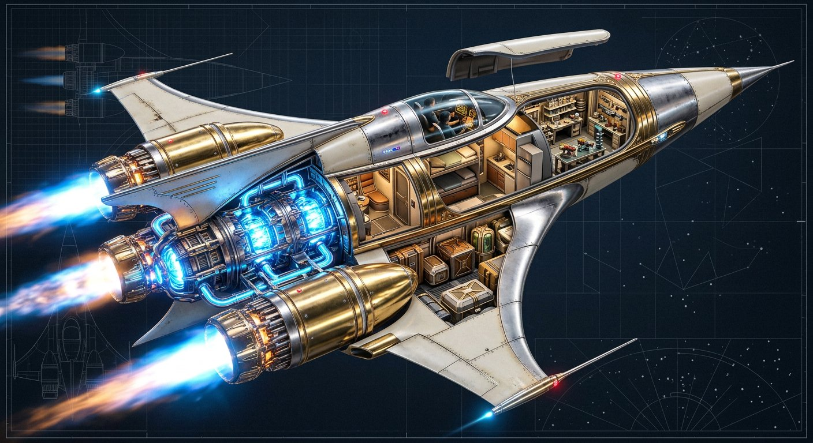
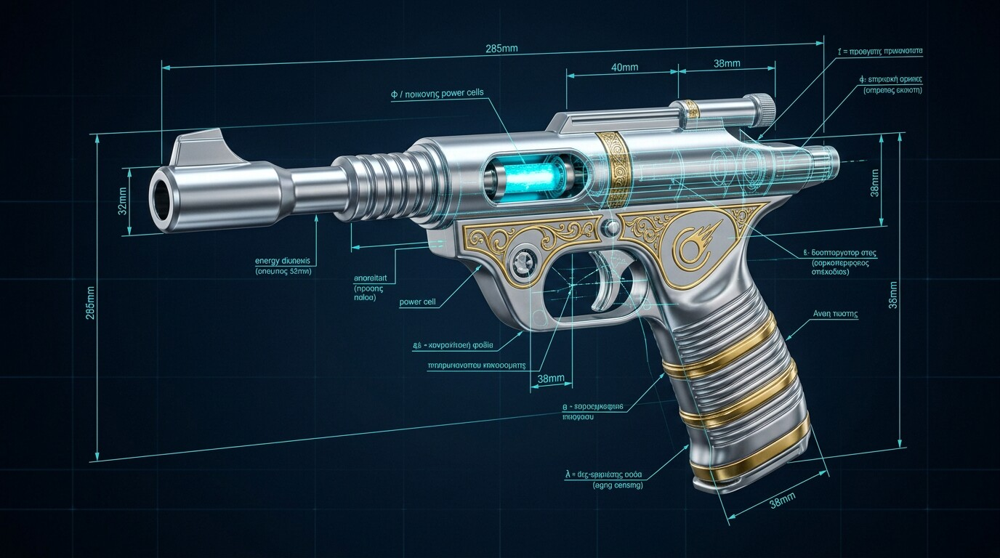
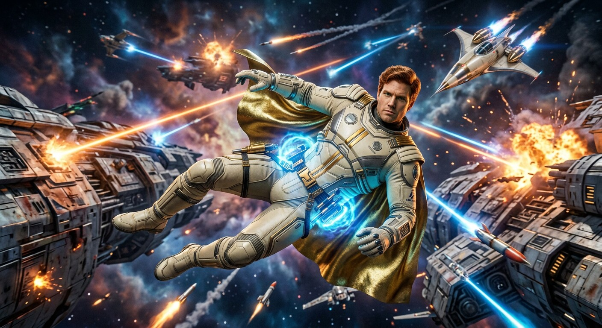

Catalogue technique · Base de Tycho · 2940 AD
Les Technologies
L'arsenal du Wizard of Science
Des armes à rayons aux vaisseaux cosmiques : l'ingénierie du 30ème siècle, élégante, optimiste — et redoutable entre de mauvaises mains.

Fiche T-01 · Arme principale
Le Désintégrateur Rayonnant
Le pistolet à rayons emblématique de Captain Future. Il désintègre la matière au niveau moléculaire — un réglage doux étourdit, un réglage puissant dissout toute substance connue. Rechargeable à l'énergie solaire, il est aussi fiable dans la jungle de Vénus que dans le vide.
- Type
- Pistolet à rayons — désintégration moléculaire
- Modes
- Étourdissement · Désintégration partielle · Fatale
- Recharge
- Cellule solaire intégrée
- Portée
- ~50 m dans l'atmosphère · illimitée dans le vide
- Porté par
- Captain Future · Joan Randall · Otho
« Un rayonnement qui pulvérise la matière en poussière d'atomes. »

Fiche T-02 · Propulsion individuelle
Le Répulseur Gravifique
Une ceinture technologique qui répulse la gravité locale, permettant le vol libre dans l'espace ou dans les atmosphères. L'équipe des Futuremen l'utilise pour traverser les soutes ennemies, franchir les abîmes et manœuvrer en apesanteur avec une grâce acrobatique.
- Type
- Ceinture de répulsion gravifique
- Autonomie
- 8 heures de vol continu
- Vitesse
- Jusqu'à 40 km/h en atmosphère
- Usage
- Vol libre · sauvetage · infiltration
- Signature
- Aura anti-gravité bleue caractéristique
« La gravité n'est qu'une opinion. La science peut la contredire. »
Fiche T-03 · Vaisseau spatial
The Comet
Construit dans les ateliers de la base lunaire, The Comet est le vaisseau le plus rapide du système solaire : coque art déco blanc crème et or, nez effilé, quatre nacelles d'énergie cosmique. Il transporte l'équipe au-delà des planètes — et même au-delà des étoiles.
- Longueur
- ~60 m
- Propulsion
- 4 réacteurs à énergie cosmique · quasi-lumière
- Systèmes
- Camouflage · boucliers énergétiques · armement
- Équipage
- 4 Futuremen + passagers
- Base
- Hangar de la base lunaire de Tycho
« The Comet, Futuremen ! » — et le vaisseau filait comme son nom.

Fiche T-04 · Base d'opérations
Le Laboratoire Lunaire
Enfouie sous le cratère de Tycho, la base de Captain Future est un complexe scientifique complet : ateliers de construction, bibliothèque de données, centre de communication, et le hangar où repose The Comet. C'est ici que Curt Newton grandit — et que naquit la légende.
- Localisation
- Tycho, face cachée de la Lune
- Sections
- Ateliers · Bibliothèque · Communications · Hangar
- Dômes
- Transparents, pressurisés, jardins intérieurs
- Défense
- Canons à rayons · champs de force
- Statut
- Quartier général des Futuremen
« La Lune était leur forteresse — et la science, leur royaume. »

Fiche T-05 · Communication
Le Communicateur Cosmique
La communication instantanée à travers tout le système solaire : un appel de détresse émis sur un monde est entendu immédiatement sur tous les autres. C'est par ce réseau que « Calling Captain Future » retentit — l'ancêtre de tous les téléphones spatiaux de la science-fiction.
- Type
- Communication instantanée interplanétaire
- Portée
- Tout le système solaire
- Formats
- Voix · données · vidéo
- Usage
- Appels de détresse · coordination des patrouilles
- Héritage
- Ancêtre de tous les communicants de la SF
« Dans le système solaire, nul n'est jamais seul. Il suffit d'appeler. »
Voir le système en 3D
L'atlas solaire interactif : faites tourner les planètes, explorez les sept mondes habités, suivez les voyages de Captain Future.
Ouvrir l'Atlas Solaire 🪐